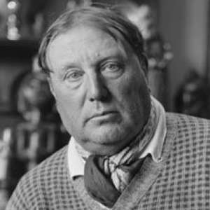
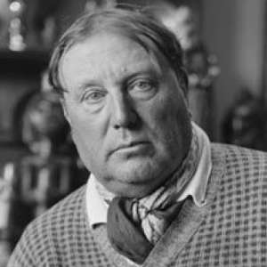
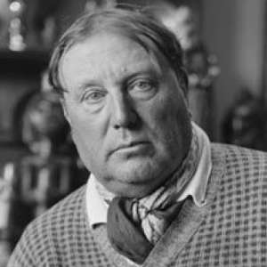
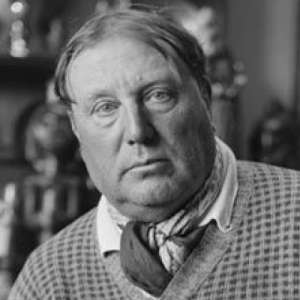

Autor: Alfred Sisley
Data: 1877
Técnica: Óleo sobre tela
Dimensões:Aproximadamente 60 x 73 cm
Localização: Museu de Arte de Rouen, França
"The River Seine at Chatou" de Maurice de Vlaminck é uma pintura que retrata uma paisagem ao longo do rio Sena na cidade de Chatou. O rio ocupa o centro da composição, refletindo o céu e as margens em tons profundos de azul e verde, com reflexos de vermelho e laranja que sugerem a luz do sol. As margens são cercadas por árvores e vegetação, pintadas em verdes e amarelos vibrantes, criando um forte contraste com o rio. O céu, em tons de azul e laranja, contribui para uma atmosfera quente e luminosa. As construções ao fundo são representadas de maneira simplificada, sem detalhes realistas, com a vegetação e as margens pintadas em pinceladas amplas e expressivas, transmitindo uma sensação de movimento e energia na paisagem natural.